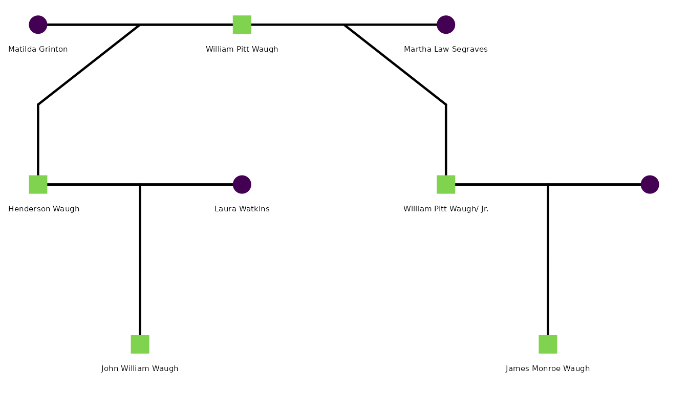

vignettes/getting-started.Rmd
getting-started.Rmdtitle: “Getting Started with tidygedcom” output: rmarkdown::html_vignette vignette: > % % %
GEDCOM (Genealogical Data Communication) is a plain-text file format used by virtually every genealogy platform — Ancestry, FamilySearch, MyHeritage, Gramps, and others. A typical workflow looks like this:
.ged file from the tree settings
page.readGedcom().The file itself is a structured text file. Here is a small slice:
0 @I1@ INDI
1 NAME William Pitt /Waugh/
1 SEX M
1 BIRT
2 DATE 28 APR 1775
2 PLAC Adams County, Pennsylvania, USA
1 DEAT
2 DATE 14 AUG 1852
2 PLAC Wilkes County, North Carolina, USA
1 FAMS @F28@
1 FAMS @F29@
0 @F28@ FAM
1 HUSB @I1@
1 WIFE @I2@
1 CHIL @I3@
0 @F29@ FAM
1 HUSB @I1@
1 WIFE @I4@
1 CHIL @I5@
1 _SREL friendIndividual records (INDI) hold person-level facts;
family records (FAM) link spouses and children and carry
marriage or divorce events. Non-standard tags like _SREL
are used by Ancestry.com to annotate relationship types — here marking a
non-marital union. tidygedcom reads both.
This vignette uses a real family tree as its running example: the W. Henderson Waugh Family Tree, a genetic genealogy project investigating the paternal ancestry of a living individual, Christian Emil WAUGH (b. 29 April 1978).
The core research question is one of paternity. William Pitt Waugh (b. 28 April 1775, Adams County, Pennsylvania; d. 14 August 1852, Wilkes County, North Carolina) was a bachelor slaveholder. Historical records show he placed a “Runaway/Fugitive Enslaved Person” notice in the Alexandria Gazette on 21 March 1820. His last will and testament, filed in Wilkes County, names no lawful wife.
Evidence in the tree points to two sons born to two different women of color — both outside of marriage:
W. Henderson Waugh and William Pitt Waugh Jr. are, if the documentary evidence is correct, paternal half-brothers — both sons of William Pitt Waugh Sr. by different mothers. The question is whether their shared Y chromosome can be confirmed through genetic genealogy.
The paternal chain from the focal individual back through history is:
|||| | Self | Christian Emil WAUGH | 29 Apr 1978, Monterey County CA | | Father | Gregory Emil Waugh | Jun 1958 | | Grandfather | Warner F Waugh | abt 1933, NC | | Great-grandfather | John William “Bud” Waugh | abt Jun 1880, NC | | 2nd great-grandfather | W. Henderson Waugh | abt 1835, NC | | 3rd great-grandfather | William Pitt Waugh Sr. | 28 Apr 1775, Adams County PA |
Because W. Henderson Waugh’s paternity rests on historical record rather than DNA, a Y-chromosome match with a living male descendant of William Pitt Waugh Jr. (the Segraves line) would strongly corroborate that William Pitt Waugh Sr. fathered both half-brothers.
We construct a small GEDCOM in memory that captures the key relationships described above. This allows all code examples below to run without an external file.
sample_ged <- c(
"0 HEAD",
"1 GEDC",
"2 VERS 5.5.1",
"1 CHAR UTF-8",
# William Pitt Waugh Sr. — the common paternal ancestor
"0 @I1@ INDI",
"1 NAME William Pitt /Waugh/",
"1 SEX M",
"1 BIRT",
"2 DATE 28 APR 1775",
"2 PLAC Adams County, Pennsylvania, USA",
"1 DEAT",
"2 DATE 14 AUG 1852",
"2 PLAC Wilkes County, North Carolina, USA",
"1 FAMS @F1@",
"1 FAMS @F2@",
# Matilda Grinton — mother of W. Henderson Waugh
"0 @I2@ INDI",
"1 NAME Matilda /Grinton/",
"1 SEX F",
"1 BIRT",
"2 DATE ABT 1797",
"2 PLAC North Carolina, USA",
"1 FAMS @F1@",
# W. Henderson Waugh — 2nd great-grandfather of focal person
"0 @I3@ INDI",
"1 NAME W. Henderson /Waugh/",
"1 SEX M",
"1 BIRT",
"2 DATE ABT 1835",
"2 PLAC Wilkes County, North Carolina, USA",
"1 FAMC @F1@",
"1 FAMS @F3@",
# Martha Law Segraves — mother of William Pitt Waugh Jr.
"0 @I4@ INDI",
"1 NAME Martha Law /Segraves/",
"1 SEX F",
"1 BIRT",
"2 DATE OCT 1814",
"1 FAMS @F2@",
# William Pitt Waugh Jr. (born William Segraves) — paternal half-brother of W. Henderson
"0 @I5@ INDI",
"1 NAME William Pitt /Waugh/ Jr.",
"1 SEX M",
"1 BIRT",
"2 DATE 1844",
"2 PLAC Wilkes County, North Carolina, USA",
"1 DEAT",
"2 DATE FEB 1880",
"1 FAMC @F2@",
"1 FAMS @F4@",
# Laura Watkins — wife of W. Henderson Waugh
"0 @I6@ INDI",
"1 NAME Laura /Watkins/",
"1 SEX F",
"1 BIRT",
"2 DATE ABT 1846",
"2 PLAC North Carolina, USA",
"1 FAMS @F3@",
# John William (Bud) Waugh — son of W. Henderson; great-grandfather of focal person
"0 @I7@ INDI",
"1 NAME John William /Waugh/",
"1 SEX M",
"1 BIRT",
"2 DATE ABT JUN 1880",
"2 PLAC North Carolina, USA",
"1 FAMC @F3@",
# James Monroe Waugh — son of William Pitt Jr.; Y-DNA candidate branch
"0 @I8@ INDI",
"1 NAME James Monroe /Waugh/",
"1 SEX M",
"1 BIRT",
"2 DATE 10 NOV 1867",
"1 DEAT",
"2 DATE 23 JUL 1937",
"1 FAMC @F4@",
# Family 1: William Pitt Sr. + Matilda Grinton -> W. Henderson Waugh
"0 @F1@ FAM",
"1 HUSB @I1@",
"1 WIFE @I2@",
"1 CHIL @I3@",
# Family 2: William Pitt Sr. + Martha Segraves -> William Pitt Jr.
# _SREL friend marks this as a non-marital relationship in Ancestry exports
"0 @F2@ FAM",
"1 HUSB @I1@",
"1 WIFE @I4@",
"1 CHIL @I5@",
"1 _SREL friend",
# Family 3: W. Henderson Waugh + Laura Watkins
"0 @F3@ FAM",
"1 HUSB @I3@",
"1 WIFE @I6@",
"1 CHIL @I7@",
"1 MARR",
"2 DATE 24 JUN 1877",
"2 PLAC Wilkes County, North Carolina, USA",
# Family 4: William Pitt Jr. + wife
"0 @F4@ FAM",
"1 HUSB @I5@",
"1 CHIL @I8@",
"0 TRLR"
)
tmp_ged <- tempfile(fileext = ".ged")
writeLines(sample_ged, tmp_ged)readGedcom()
readGedcom() parses all INDI blocks and
returns one row per person. It infers momID and
dadID automatically by tracing FAMC →
FAMS links — no manual ID mapping required.
ped <- readGedcom(tmp_ged, verbose = FALSE)
ped[, c("personID", "name", "sex", "birth_date", "death_date", "momID", "dadID")]
#> personID name sex birth_date death_date momID dadID
#> 1 1 William Pitt Waugh M 28 APR 1775 14 AUG 1852 <NA> <NA>
#> 2 2 Matilda Grinton F ABT 1797 <NA> <NA> <NA>
#> 3 3 W. Henderson Waugh M ABT 1835 <NA> 2 1
#> 4 4 Martha Law Segraves F OCT 1814 <NA> <NA> <NA>
#> 5 5 William Pitt Waugh/ Jr. M 1844 FEB 1880 4 1
#> 6 6 Laura Watkins F ABT 1846 <NA> <NA> <NA>
#> 7 7 John William Waugh M ABT JUN 1880 <NA> 6 3
#> 8 8 James Monroe Waugh M 10 NOV 1867 23 JUL 1937 <NA> 5Notice that W. Henderson Waugh and William Pitt Waugh Jr. share the
same dadID — William Pitt Waugh Sr. — reflecting the
half-sibling relationship in the parsed data.
attr(ped, "gedcom_version")
#> [1] "5.5.1"summarizeGedcom()
summarizeGedcom(ped)
#> GEDCOM Summary (version: 5.5.1 )
#> Individuals: 8
#> Sex: M = 5 | F = 3 | Unknown = 0
#> With birth date: 8 (100%)
#> With death date: 3 (38%)
#> With birth place: 6 (75%)
#> With death place: 1 (12%)
#> With known mother: 3 (38%)
#> With known father: 4 (50%)For a large real-world file (the full W. Henderson Waugh tree has several hundred individuals), this is the first thing to call after loading — it shows at a glance how much birth, death, and parentage data is present before any cleaning.
GEDCOM dates are raw strings that often carry qualifiers
(ABT, BEF, AFT) or calendar
escape codes (@#DGREGORIAN@). Historical genealogy —
especially for antebellum American records — is full of approximate
dates: birth years reconstructed from census age questions, death years
inferred from probate filings, and marriage dates from county clerk
records that were never systematically kept.
Date objects
Pass parse_dates = TRUE to convert
birth_date and death_date to proper
Date objects. Qualifiers and escapes are stripped
first:
ped_dates <- readGedcom(tmp_ged, parse_dates = TRUE, verbose = FALSE)
ped_dates[, c("name", "birth_date", "death_date")]
#> name birth_date death_date
#> 1 William Pitt Waugh 1775-04-28 1852-08-14
#> 2 Matilda Grinton <NA> <NA>
#> 3 W. Henderson Waugh <NA> <NA>
#> 4 Martha Law Segraves <NA> <NA>
#> 5 William Pitt Waugh/ Jr. <NA> <NA>
#> 6 Laura Watkins <NA> <NA>
#> 7 John William Waugh <NA> <NA>
#> 8 James Monroe Waugh 1867-11-10 1937-07-23Not all dates parse cleanly to Date objects —
"ABT 1835" or "OCT 1814" have no day
component. extractGedcomYear() handles all forms and
returns an integer year:
dates_raw <- c("28 APR 1775", "14 AUG 1852", "ABT 1835", "OCT 1814",
"1844", "ABT JUN 1880", NA)
extractGedcomYear(dates_raw)
#> [1] 1775 1852 1835 1814 1844 1880 NAA typical use: add a birth_year column robust to
approximate dates, then flag individuals who may still be living:
ped$birth_year <- extractGedcomYear(ped$birth_date)
ped$death_year <- extractGedcomYear(ped$death_date)
ped[, c("name", "birth_year", "death_year")]
#> name birth_year death_year
#> 1 William Pitt Waugh 1775 1852
#> 2 Matilda Grinton 1797 NA
#> 3 W. Henderson Waugh 1835 NA
#> 4 Martha Law Segraves 1814 NA
#> 5 William Pitt Waugh/ Jr. 1844 1880
#> 6 Laura Watkins 1846 NA
#> 7 John William Waugh 1880 NA
#> 8 James Monroe Waugh 1867 1937readGedcomFamilies()
Marriage and relationship data live in FAM blocks.
readGedcomFamilies() parses them into a separate data
frame:
fam <- readGedcomFamilies(tmp_ged, verbose = FALSE)
fam[, c("famID", "husbID", "wifeID", "marr_date", "marr_place")]
#> famID husbID wifeID marr_date marr_place
#> 1 1 1 2 <NA> <NA>
#> 2 2 1 4 <NA> <NA>
#> 3 3 3 6 24 JUN 1877 Wilkes County, North Carolina, USA
#> 4 4 5 <NA> <NA> <NA>The _SREL friend tag on Family 2 — the non-marital
relationship between William Pitt Waugh Sr. and Martha Law Segraves — is
preserved in the raw GEDCOM but not yet parsed as a structured column.
This is a known limitation when working with Ancestry.com exports that
use non-standard tags.
Join back to the individuals table to annotate both families with spouse names:
merge(
fam[, c("famID", "husbID", "wifeID", "marr_date", "marr_place")],
ped[, c("personID", "name")],
by.x = "husbID", by.y = "personID", all.x = TRUE
) |>
merge(
ped[, c("personID", "name")],
by.x = "wifeID", by.y = "personID", all.x = TRUE,
suffixes = c("_husb", "_wife")
)
#> wifeID husbID famID marr_date marr_place
#> 1 2 1 1 <NA> <NA>
#> 2 4 1 2 <NA> <NA>
#> 3 6 3 3 24 JUN 1877 Wilkes County, North Carolina, USA
#> 4 <NA> 5 4 <NA> <NA>
#> name_husb name_wife
#> 1 William Pitt Waugh Matilda Grinton
#> 2 William Pitt Waugh Martha Law Segraves
#> 3 W. Henderson Waugh Laura Watkins
#> 4 William Pitt Waugh/ Jr. <NA>GEDCOM stores coordinates in compass-prefix notation
(N36.1234, W81.5678).
convertGedcomCoords() converts all
_lat/_long columns to signed decimal degrees
in one call:
coord_ged <- c(
"0 HEAD", "1 GEDC", "2 VERS 5.5.1", "1 CHAR UTF-8",
"0 @I1@ INDI",
"1 NAME William Pitt /Waugh/",
"1 SEX M",
"1 BURI",
"2 PLAC Smithey Cemetery, Wilkes County, NC",
"2 MAP",
"3 LATI N36.1548",
"3 LONG W81.1845",
"0 TRLR"
)
tmp_coord <- tempfile(fileext = ".ged")
writeLines(coord_ged, tmp_coord)
ped_raw <- readGedcom(tmp_coord, remove_empty_cols = FALSE, verbose = FALSE)
ped_conv <- convertGedcomCoords(ped_raw)
ped_raw[, c("name", "burial_lat", "burial_long")]
#> name burial_lat burial_long
#> 1 William Pitt Waugh N36.1548 W81.1845
ped_conv[, c("name", "burial_lat", "burial_long")]
#> name burial_lat burial_long
#> 1 William Pitt Waugh 36.1548 -81.1845
unlink(tmp_coord)You can also call the underlying converters directly:
gedcomLatToNumeric(c("N36.1548", "S33.8688", NA))
#> [1] 36.1548 -33.8688 NA
gedcomLonToNumeric(c("W81.1845", "E151.2093", NA))
#> [1] -81.1845 151.2093 NAOnce the data is in a tidy data frame, the BGmisc
package provides the next layer of analysis: computing pairwise
relatedness, tracing paternal lineages, and identifying Y-chromosome
carriers.
The strategy for the Waugh paternity question is:
library(BGmisc)
#>
#> Attaching package: 'BGmisc'
#> The following objects are masked from 'package:tidygedcom':
#>
#> buildTreeGrid, getWikiTreeSummary, readGed, readgedcom, readGedcom,
#> readWikifamilytree, royal92, traceTreePaths
library(ggpedigree)
# Convert IDs to numeric (required by BGmisc)
ped_num <- ped
ped_num$personID <- as.numeric(ped_num$personID)
ped_num$momID <- as.numeric(ped_num$momID)
ped_num$dadID <- as.numeric(ped_num$dadID)
# Structure pedigree into family units and compute paternal line IDs
ged_ped <- ped2fam(ped_num, personID = "personID") |>
ped2paternal(personID = "personID", momID = "momID", dadID = "dadID")
# Identify John William "Bud" Waugh as the focal person's great-grandfather
# (the deepest ancestor in our sample with a known paternal chain)
focal_ID <- ged_ped$personID[grepl("John William", ged_ped$name)]
y_line_ID <- ged_ped$patID[ged_ped$personID == focal_ID]
# Flag Y-line membership — green branch = focal person's line
ged_ped$y_line <- ifelse(ged_ped$patID == y_line_ID, "Y Line", "Other Lines")
ggpedigree(
ged_ped,
personID = "personID",
momID = "momID",
dadID = "dadID",
sexVar = "sex",
config = list(
label_include = TRUE,
label_column = "name",
label_text_size = 2,
code_male = "M",
code_female = "F",
segment_lineage_include = TRUE,
segment_lineage_focal_personID = focal_ID,
segment_lineage_component = "paternal",
segment_lineage_legend_title = "Patriline",
add_phantoms = TRUE,
founder_order_seed = 1L
)
)
#> Warning in buildPlotConfig(default_config = default_config, config = config, :
#> The following config values are not recognized by getDefaultPlotConfig():
#> segment_lineage_include, segment_lineage_focal_personID,
#> segment_lineage_component, segment_lineage_legend_title, founder_order_seed
#> REPAIR IN EARLY ALPHA
The plot shows both branches descending from William Pitt Waugh Sr.: the green (focal) line through W. Henderson Waugh on the left, and the Segraves branch through William Pitt Waugh Jr. on the right. These are distinct people with distinct IDs — the shared surname is what makes the tree appear circular at first glance, but there is no loop.
In the full Waugh analysis, addPaternalChain() and
addPaternalLineFlag() from BGmisc extend this
further by flagging descendants of specific ancestors. The key variable
is:
in_granddad_henderson_line_not_dad_henderson_line =
in_granddad_henderson_line & !in_dad_henderson_lineThis isolates individuals descended from William Pitt Waugh Sr. but
not through W. Henderson Waugh — i.e., the Segraves
(William Pitt Jr.) branch — who are the primary Y-DNA match candidates.
ggPedigreeInteractive() renders the full tree with nodes
colored by additive genetic relatedness to the focal individual and
edges highlighted by patriline membership.
To apply this workflow to a real Ancestry.com export:
# Unzip the Ancestry export
unzip("W. Henderson Waugh Family Tree.zip", overwrite = TRUE)
# Peek at the raw file to orient yourself before parsing
raw_ged <- readLines("W. Henderson Waugh Family Tree.ged")
head(raw_ged, 15)
# Locate the anchor individual by name
line_num <- which(grepl("1 NAME W. Henderson /Waugh/", raw_ged, fixed = TRUE))
raw_ged[line_num:(line_num + 20)]
# Parse all INDI blocks
ped <- readGedcom("W. Henderson Waugh Family Tree.ged",
remove_empty_cols = TRUE, verbose = FALSE)
# Add year columns robust to approximate dates
ped$birth_year <- extractGedcomYear(ped$birth_date)
ped$death_year <- extractGedcomYear(ped$death_date)
# Quick overview
summarizeGedcom(ped)
# Parse family/marriage records
fam <- readGedcomFamilies("W. Henderson Waugh Family Tree.ged", verbose = FALSE)Note that Ancestry.com regenerates person IDs each time you export, so ID values will differ between exports. Always locate individuals by name or birth date rather than by a hardcoded ID.
unlink(tmp_ged)||| | readGedcom(file) | Parse INDI blocks
→ one row per person | | readGedcomFamilies(file) | Parse
FAM blocks → one row per family | |
summarizeGedcom(df) | Coverage counts and percentages | |
extractGedcomYear(x) | Year from any GEDCOM date string | |
convertGedcomCoords(df) | Convert
_lat/_long columns to decimal degrees | |
gedcomLatToNumeric(x) | Convert a latitude string vector |
| gedcomLonToNumeric(x) | Convert a longitude string vector
|